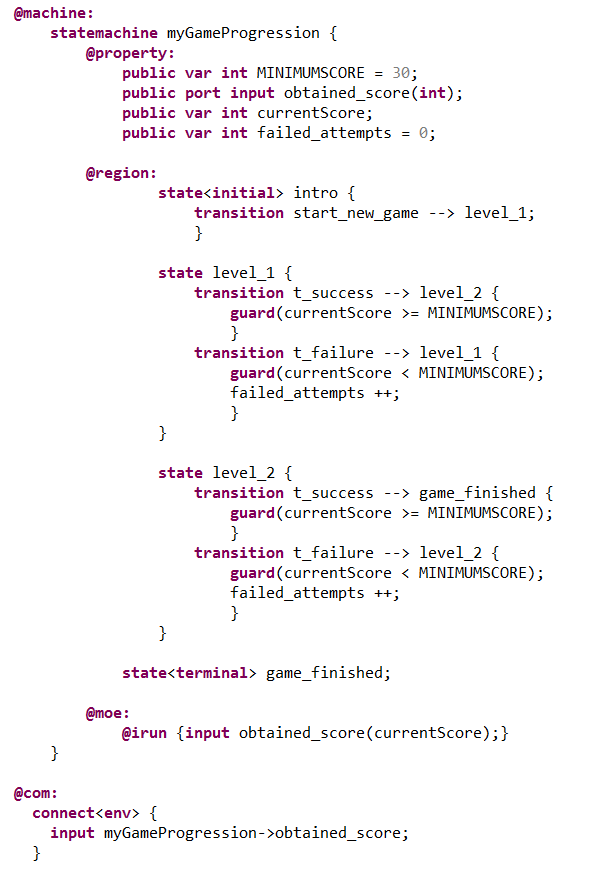
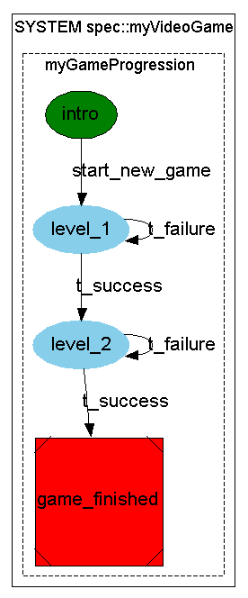
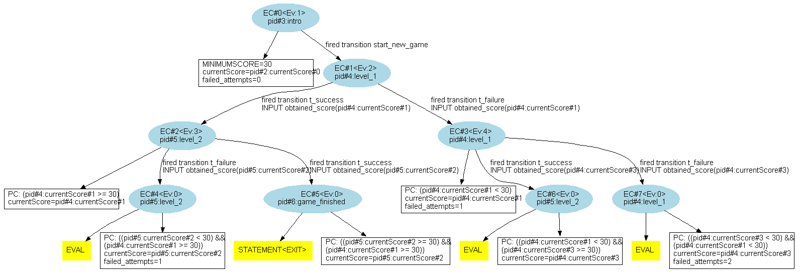

Let's go back to back to the video game example of before that was used to showcase the "@irun{...}" of basic states.
We can factorize the "@irun{...}" of the states "level_1" and "level_2" into a single "@irun{...}" in the parent "myGameProgression" statemachine as in the following code :
We notice that, unlike for states, the "@irun{...}" activity primitive of statemachines needs to be within an "@moe:" section.
Which gives the following graph :
As a consequence, at each given step of evaluation, the player, starting from a given level, gets a new "currentScore" through the port "obtained_score" and can either stay in the same level or go to the next according to the score value :
